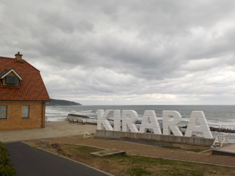
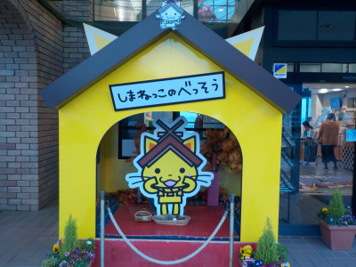
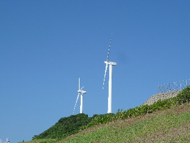
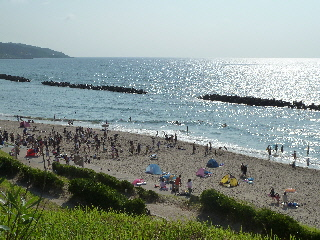
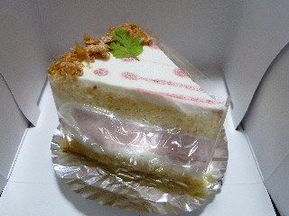

インスタでよく見るキララ多伎の景色を見ました。
更新日 : 2023/12/18

インスタでよく見るkiraraの文字の実物を初めて見ました。
キララの建物のすぐ横にあったんですね。
派手なマンホールの写真も撮りました。
キララ多伎は観光地っぽく色々モノがあっていいですね。
島根県出雲市多伎町多岐135-1
更新日 : 2023/12/18

インスタでよく見るkiraraの文字の実物を初めて見ました。
キララの建物のすぐ横にあったんですね。
派手なマンホールの写真も撮りました。
キララ多伎は観光地っぽく色々モノがあっていいですね。
更新日 : 2018/11/11
夕方の暗がりのしまねっこです。

しまねっこは一人暮らしかな。別荘の大きさからしてそんな感じですかね。
暗い別荘ってなんかイメージダウン。イルミネーションを付けて欲しいです。
更新日 : 2014/07/27
道の駅 キララ多伎で今日はおまつりです。

いい天気で良かったですね。

キララビーチにも人が沢山でした。
海水浴とお祭りが同時に楽しめていいイベントですね。夏を満喫です。
出店・屋台で美味しいものを買って食べて帰りました。
更新日 : 2010/12/14
キララ多伎の横に新しく出来たカフェ「風」のケーキをもらいました。お持ち帰りが出来るみたいです。

ふんわりしている苺のケーキです。フォークを刺したらふにゃってなりました。
イチゴ味が強くて、ジャムのような味がしました。
更新日 : 2009/6/21
キララ多伎でイチジクソフトを久しぶりに食べました。
以前食べた時はほんのりイチジク味だったと思ったんですが、今日食べたら味が濃く感じました。私の味覚がちょっと変わったのかなって思いました。
いじちく味がしっかりしてて美味しかったです。
近くに出来たいちじくの里「多伎いちじく館」にも行ってみました。
野菜とか売ってて広いですね。キララもいいですけど、多伎の商品を見るならこっちの方が不必要なものが置いてなくて見やすいですね。
これからこっちも利用しようと思いました。
更新日 : 2006/11/26
基本的には番茶ですが、やまもも葉が入っているためか、ほんのり甘い味がします。
普段お茶（日本茶系）って一人では飲まないんですが、このヤマモモ茶はちょっと甘いので、紅茶みたいな感覚で一人で気軽に飲んでたりします。
番茶なので体にも優しそう（思い込みですけど）ですし、沢山飲んでも気分が悪くなることがないので気にいってます。
冬は家で、だらだらお茶をのみながら過ごしたりするんですが、そんな時にも丁度いいです。
更新日 : 2006/8/10
この前、キララ多伎に行った時に買ったいちじくカンテンとやまももゼリーを食べました。両方とも多伎町の名産品ですね。
いちじくカンテンはフルーツポンチみたいな味で、なんとくフルーティで爽やかな甘い味でした。いまどきの時期にはいいかも？
イチジクって糖度が多くておいしかったりするんですけど、イチジクそのものの味って他のフルーツに比べると、あんまりインパクトがない感じがするなって思いました。
やまももゼリーですが、やまももを食べたことがないので「やまももってこんな味なんだー」って感心しながらたべました。ベリー系な味なんですね。こっちは結構しっかりした味でした。
2005/6/19
キララ多伎までプチドライブをしてきました。
もうここは海開きをしているんですが、まだ6月なので人はいないかな？って思ってたんですけど、ちびっこ連れの家族の人が10家族くらい遊んでました。海辺でちゃぷちゃぷするにはもう十分な気温でした。
キララベーカリーで出来たてのパンを買って、外で海を見ながら食べたんですけど、とてもおいしかったです。
以前に買って帰って食べたことはあるんですが、そのときより全然おいしく感じました。出来たてのパンを、綺麗な景色を見ながら食べるのはいいもんですね。
また天気のいい日にはプチドライブに行こうと思います。
更新日 : 2005/6/8
キララの名物「海鮮たこ焼き」を久々に食べました。相変わらずの味をキープしてますね。
たこ焼きの具が普通にたこ入りのものと、たこの代わりにエビ入が入ったものと、ホタテが入ったものの3種類が2個づつで1セットになってます。
1セットで3種類食べれるのはうれしいですね。得した気分です。
ふわっとやわらかい生地の中にそれぞれの具が入っているんですけど、個人的にはもっと具を沢山入れて欲しいです。具の味をもっと楽しみたいな～。